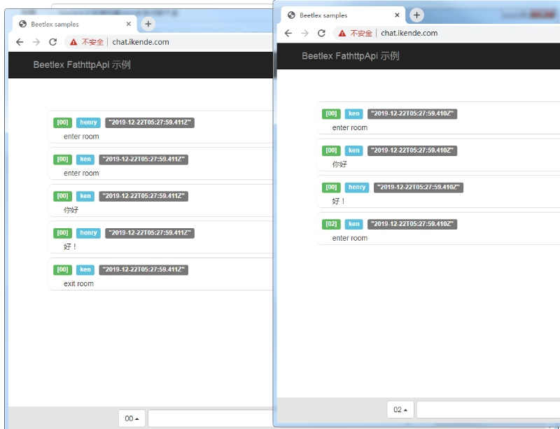

其实构建一个Web多房间聊天室也并不是什么困难的技术，借助于websocket就可以轻松实现多用户在线实时通讯交互；在这里主要介绍一下在BeetleX和BeetleXjs的支持下如何让这个功能实现的更简单和高效。接下来通过使用BeetleX来一步步讲解Web多房间聊天室的具体实现。
既然是多房间聊天室那它具备两个主要元素，分别是用户和房间;下面通过类来描述这两个元素:
用户
public class User
{
public string Name { get; set; }
public string Address { get; set; }
[JsonIgnore]
public ISession Session { get; set; }
[JsonIgnore]
public Room Room { get; set; }
public void Send(BeetleX.FastHttpApi.WebSockets.DataFrame frame)
{
frame.Send(Session);
}
public void Exit()
{
Room?.Exit(this);
}
}信息描述比较简单主要包括信息用:名称，会话和房间；涉及的行为有发送信息和退出房间。
房间
public class Room
{
public string Name { get; set; }
public List<User> Users { get; private set; } = new List<User>();
public HttpApiServer HttpServer { get; set; }
public void Send(Command cmd)
{
cmd.Room = Name;
var frame = HttpServer.CreateDataFrame(cmd);
lock (Users)
{
foreach (var item in Users)
item.Send(frame);
}
}
public User[] GetOnlines()
{
lock (Users)
return Users.ToArray();
}
public void Enter(User user)
{
if (user == null)
return;
if (user.Room != this)
{
user.Room?.Exit(user);
lock (Users)
Users.Add(user);
user.Room = this;
Command quit = new Command { Type = "enter",Message=$"enter room", User = user };
Send(quit);
}
}
public void Exit(User user)
{
if (user == null)
return;
lock (Users)
Users.Remove(user);
user.Room = null;
Command quit = new Command { Type = "quit", Message = $"exit room", User = user };
Send(quit);
}
}房间信息主要包括名称和用户信息，具体行为有进房间，出房间和向房间发送信息。
有了逻辑信息那就需要把这个信息通过接口的服务方式提供给外部访问操作，接下来定义一个简单的控制器类来描述相关接口服务行为
[BeetleX.FastHttpApi.Controller]
public class Home : BeetleX.FastHttpApi.IController
{
[BeetleX.FastHttpApi.NotAction]
public void Init(HttpApiServer server, string path)
{
for (int i = 0; i < 10; i++)
{
string key = $"{i:00}";
mRooms[key] = new Room { Name = key, HttpServer = server };
}
server.HttpDisconnect += (o, e) =>
{
GetUser(e.Session)?.Exit();
};
}
private ConcurrentDictionary<string, Room> mRooms
= new ConcurrentDictionary<string, Room>(StringComparer.OrdinalIgnoreCase);
public object Rooms()
{
return from a in mRooms.Values orderby a.Name select new {a.Name};
}
public void Enter(string room, IHttpContext context)
{
User user = GetUser(context.Session);
mRooms.TryGetValue(room, out Room result);
result?.Enter(user);
}
public void Talk(string message, IHttpContext context)
{
if (!string.IsNullOrEmpty(message))
{
var user = GetUser(context.Session);
Command cmd = new Command { Type = "talk", Message = message, User = user };
user?.Room?.Send(cmd);
}
}
public void Login(string name, IHttpContext context)
{
User user = new User();
user.Name = name;
user.Session = context.Session;
user.Address = context.Request.RemoteIPAddress;
SetUser(context.Session, user);
}
private User GetUser(ISession session)
{
return (User)session["__user"];
}
private void SetUser(ISession session, User user)
{
session["__user"] = user;
}
}Init方法
用于初始化房间信息，并绑定连接断开事件，如果用户断开了则执行用户退出房间。
Login方法
登陆到用户中
Rooms方法
获取所有房间信息
Enter方法
用户进入房间
Talk
用户向房间内发送一条消息
当功能逻辑写好后，接下来的工作就是让这些接口部署到websocket服务中，部署的代码比较简单:
class Program
{
static void Main(string[] args)
{
var builder = new HostBuilder()
.ConfigureServices((hostContext, services) =>
{
services.UseBeetlexHttp(o =>
{
o.LogToConsole = true;
o.ManageApiEnabled = false;
o.Port = 80;
o.SetDebug();
o.LogLevel = BeetleX.EventArgs.LogType.Warring;
},
typeof(Program).Assembly);
});
builder.Build().Run();
}
}当服务部署后就可以专心去做前端实现的工作。
为了更方便地和Beetlex服务整合，因此也单独针对性地封装了相应的javascript组件；除了自有封装的javascript还涉及到vuejs的使用。通过以上组件整合前端的代码相比服务端来说就更简单了,详细代码如下:
<body>
<div id="page">
<page-header> </page-header>
<div class="container" style="margin-top:110px;">
<div class="row">
<ul style="list-style:none;">
<li v-for="item in messages" class="message">
<h4>
<span class="label label-success">[{{item.Room}}]</span>
<span class="label label-info">{{item.User.Name}}</span>
<span class="label label-default">{{new Date()}}</span>
</h4>
<div style="padding-left:20px;">
{{item.Message}}
</div>
</li>
</ul>
</div>
</div>
<page-footer :status="loginStatus" @login="onLogin($event)"
@talk="onTalk($event)" @select="onSelectRoom($event)" :rooms="getRooms.result">
</page-footer>
</div>
<script>
beetlex.websocket.receive = function (r) {
page.messages.push(r);
};
beetlex.websocket.disconnect = function () {
page.loginStatus = false;
};
beetlex.useWebsocket();
var login = new beetlexAction("/Login");
var getRooms = new beetlexAction('/Rooms', null, []);
var enterRoom = new beetlexAction('/Enter');
var talk = new beetlexAction('/Talk');
login.requested = function (r) {
page.loginStatus = true;
};
var model = {
getRooms: getRooms,
loginStatus: false,
login: login,
talk: talk,
enterRoom: enterRoom,
messages: [],
};
var page = new Vue({
el: '#page',
data: model,
methods: {
onSelectRoom: function (r) {
// alert(r);
this.enterRoom.post({ room: r });
},
onLogin: function (r) {
this.login.post({ name: r });
},
onTalk: function (msg) {
talk.post({ message: msg });
},
},
});
getRooms.get();
</script>
</body>beetlex
是针对http和websocket封装的功能类，它自动兼容这两种请求；在默认情况是http请求，调用useWebsocket后所有请求都优先使用websocket;当websocket不可用的情况组会自动切回到http.
beetlexAction
用于描述一个请求，分别提供了post和get方法；当在websocket下这两个方法的处理方式一样。

演示地址
代码地址
https://github.com/IKende/BeetleX-Samples/tree/master/WebSocket.Chat